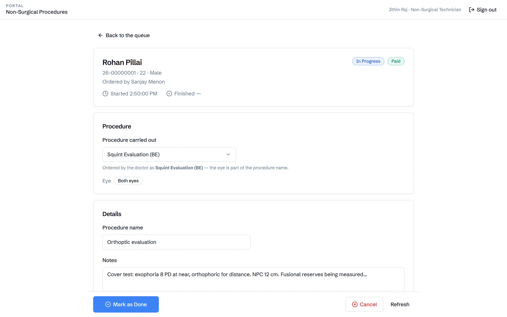
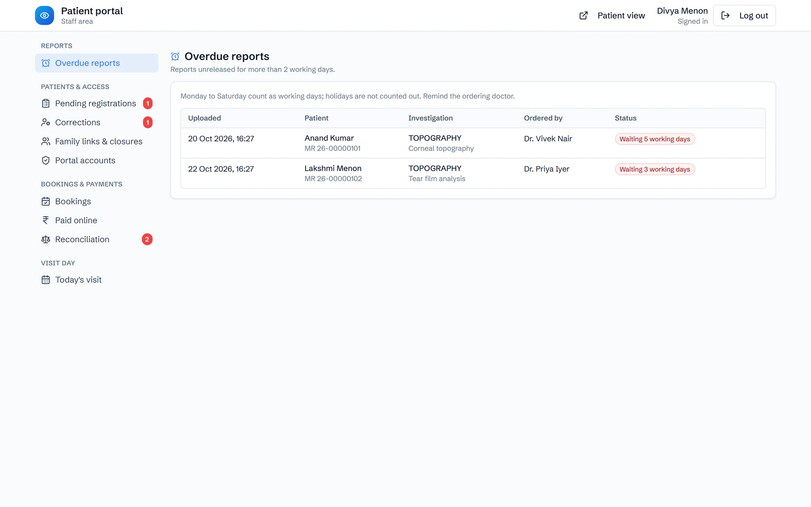
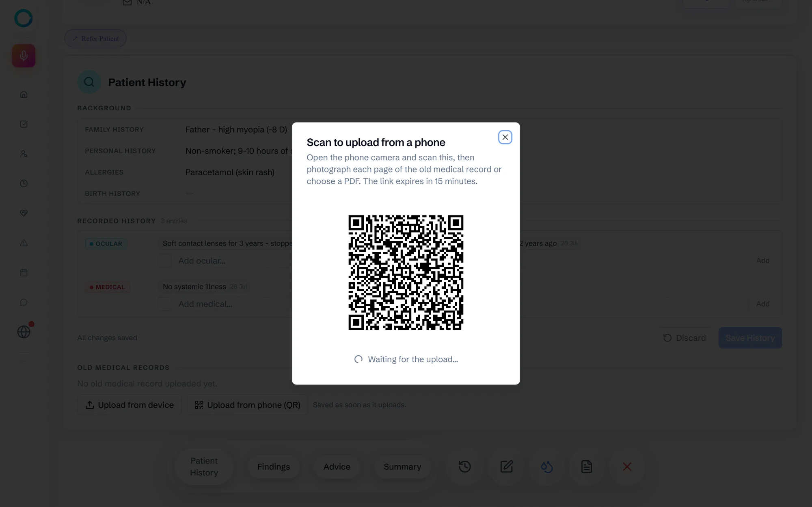

Product
Ophia at work, desk by desk.
Screen recordings of a normal day, from the front desk to theatre. To see one patient's path step by step, follow a patient on the home page.
Also in Ophia
The rest of the day's work.

Same-day procedures
Lasers, injections and evaluations ordered in the consultation land in a technician's queue, with payment, consent and a safety checklist.

The patient app's desk
Staff approve online registrations and corrections, reconcile online payments, and chase reports waiting to be released.

Paper records by phone
Old files, consent forms and outside reports are photographed on any phone through a QR code, straight into the patient's record.